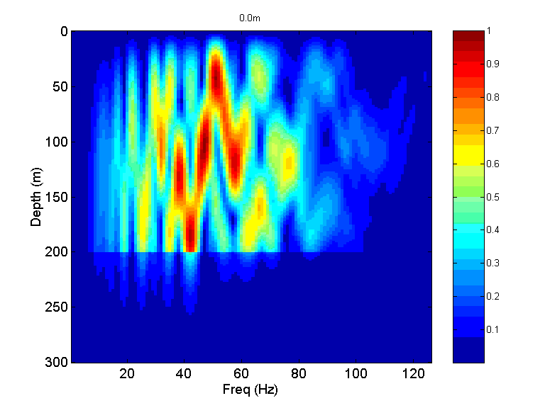
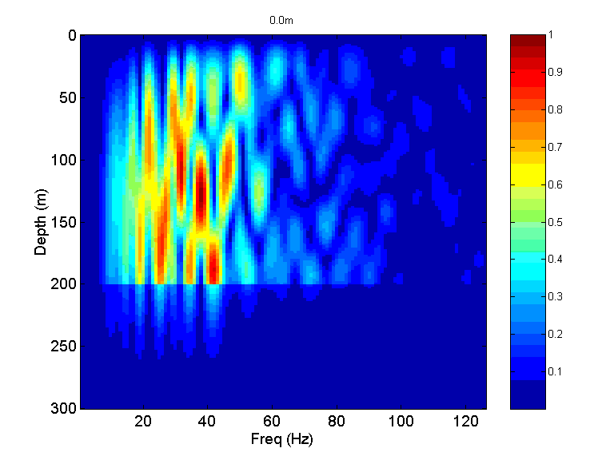

Figures 5.a and 5.b illustrate the evolution of the spectrum versus depth for the backpropagated signals studied in the previous step. This spectral mapping confirms the frequency redistribution occurring in nonlinear regimes.
Les figures 5.a et 5.b illustrent l'évolution du spectre en fonction de la profondeur pour les signaux rétropropagés étudiés précédemment. Cette cartographie spectrale confirme la redistribution fréquentielle opérée en régime non-linéaire.

Fig. 5.a: Spectral evolution (Linear Model) Fig. 5.a : Évolution spectrale (Modèle Linéaire)

Fig. 5.b: Spectral evolution (Nonlinear Model) Fig. 5.b : Évolution spectrale (Modèle Non-linéaire)
Next Research Phase
Prochaine Phase de Recherche
Following these results, the NPE model is applied to simulate nonlinear acoustic propagation in the atmosphere by adapting the boundary conditions of the waveguide.
Suite à ces résultats, le modèle NPE est utilisé pour simuler la propagation acoustique non-linéaire dans l'atmosphère en adaptant les conditions aux limites du guide d'onde.